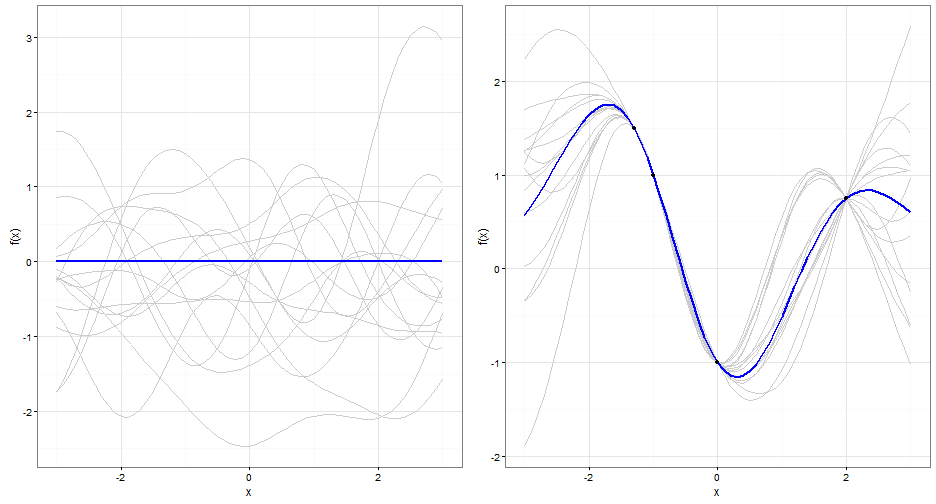

Gaussian Process models constitute a class of probabilistic statistical models in which a Gaussian process (GP) is used to describe the Bayesian a priori uncertainty about a latent function.
GPs capture our belief that a lot of functions in the world are smooth. Looking at the data acquired from the world (e.g. images, sounds), indeed smoothness is a reasonable assumption.
Starting with our (\(Prior\)) knowledge of a function (i.e. its mean and the kernel we've chosen), GP regression allows us to improve on this knowledge by adding data points to the prior to calculate the new expected function and its uncertainty. This improved understanding is the \(Posterior\).
Adding data collapses the uncertainty of the function at the points. Where you have data you should be confident, where you don't have data you shouldn't be confident. Where you don't have data you should only believe your prior knowledge, where you do have data you should believe the data.
Given \(\bar x\), the input, we would like to model \(\bar f\), the output of a process. We assume that \(\bar f\) will be modelled with a (multivariate) Gaussian distribution. Specifically, \(\bar f \sim \mathscr N(\bar 0, K(\bar x,\bar x))\) where \(K\) is a matrix with elements that are measures of similarity between each element of \(\bar x\). The measure of similarity chosen in this visualisation is the squared exponential kernel:
\[\kappa(x_i,x_j) = e^{(-\frac{\alpha}{2} (x_i-x_j)^2)}\]
This kernel has the following properties:
GP gives us a distribution over functions: \(\bar f(\bar x) \sim GP(\mu(\bar x),K(\bar x,\bar x))\)

The plot on the left shows a GP prior with zero mean \(\mu(\bar x) = 0\) and covariance function \[\kappa(x_i,x_j) = e^{(-\frac{1}{2} (x_i-x_j)^2)}\]The blue line describes the mean function of \(\bar f(\bar x)\). The fifteen grey lines are sample paths from the Gaussian process.
The plot on the right shows the posterior Gaussian process which is obtained by conditioning the prior on the four observations depicted as points. The predictive uncertainty is zero at the locations where the function value has been observed. Between the observations the uncertainty about the function value grows and the sampled functions represent valid hypothesis about f under the posterior process.